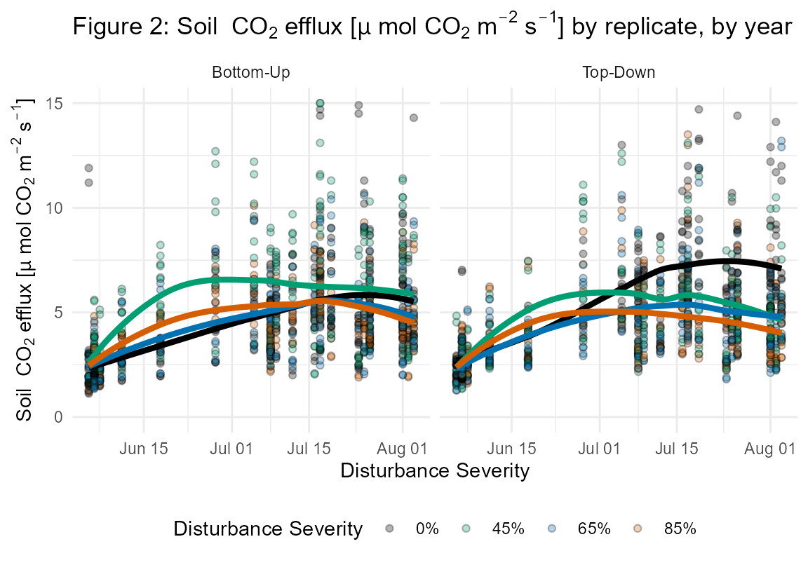
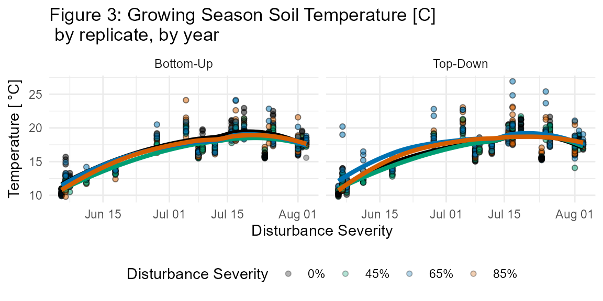

fortedata: Belowground Data
Jeff Atkins and Kayla Mathes
2021-03-11
Source:vignettes/fd_belowground_vignette.Rmd
fd_belowground_vignette.RmdBelowground Process Background and Introduction
Soil respiration (Rs) globally contributes more than half of total temperate forest carbon (C) emissions (Raich and Schlesinger 1992) and even small shifts in this important flux from globally rising disturbances could tip a forest from net C sink to net source (Schlesinger and Andrews 2000; Janssens et al. 2001; Curtis et al. 2005). While Rs response to stand-replacing disturbances has been well studied (Chen et al. 2019; Lewandowski et al. 2019), less is known about how moderate severity disturbances of different sources, such as pest and pathogen outbreaks or extreme weather events, impact the stability of Rs and other important C fluxes (Amiro et al 2010; Hicke et al 2012; Gough et al 2013). As moderate severity disturbances continue to rise globally (Cohen et al. 2016; Sommerfield et al. 2018), it is essential to understand how Rs responds to different disturbance types and identify thresholds of disturbance severity where Rs stability breaks down and soil-to-atmosphere C fluxes are likely to change.
Belowground Measurements
The fd_soil_respiration() function returns a single dataset of 3908 observations each of soil CO2 efflux (μmol CO2 m-2 s-1) as well as soil micrometeorological measurements: soil temperature (°C; integrated from 0 to 7 cm depth), and volumetric water content (%) (Figs. 3, 4; Table S5).
fortedata::fd_soil_respiration()
## Warning in data_conditions(flux, published = FALSE, contact_person, citation):
## These data are unpublished. Please contact Kayla Mathes to ask about using
## Data citation: ESSD
## Contact person: Kayla MathesSoil CO2 Efflux
The soil CO2 efflux values in this data set represent bulk soil respiration (Rs) and were measured at 160 soil collars on 36 days between May 2019 (pre-disturbance) and August 2020 (post-disturbance). Each of the 32 subplots contained five 10 cm diameter PVC collars that were installed 4 cm deep, leaving 1 cm in height above the soil surface. Collars were spatially paired with litter traps and root in-growth cores with 1 collar located at subplot center and 4 collars 8m away in each cardinal direction. In situ point Rs measurements (umol CO2 m-2 s-1) were made following protocols from Curtis et al. 2005 using a LI-6400 portable gas analyzer with 10 cm diameter soil CO2 closed chamber cuvette (LI-COR Inc, Lincoln, NE, USA). During each of the 11 total measurement efforts, two efflux values were recorded and averaged at each collar over 90 second intervals. To account for diurnal fluctuations in Rs, starting replicate and plot were randomized for each round of measurements. Recent precipitation events were documented and measurements were not taken with 24 hrs following heavy precipitation.
## Data citation: ESSD
## Contact person: Kayla Mathes

PhD Student Kayla Mathes taking measurements with the Li-Cor 6400
Additionally, to isolate the microbial component of Rs, Heterotrophic soil respiration (Rh) was estimated with in vitro root-free soil incubations from 132 soil sampling plots in July 2019. Each of the 32 subplots contained four 1 meter squared destructive soil sampling plots and 3 pseudo-replicate soil cores were harvested to 10 cm in each destructive plot. Soil cores were stored for 24 hours at 4°C before being processed and were then sieved to eliminate roots. Root-free soil was then weighed into ventilated mason jars and incubated at the average soil temperature (Ts) for two weeks. Rh was measured with a LI-6400 and custom soil chamber cuvette (Curtis et al. 2005). Four efflux values were recorded in each mason jar over 90 second intervals. Soil jars were vented for 75 mins to stabilize gas exchange before measuring (time to stabilization was determined from a degassing trial with a randomized subset of soil jars, n = 5). These data are not in the current version of fortedata.
Soil Micrometeorology
Soil temperature (Ts) and soil moisture (s) were measured concurrently with in situ bulk Rs and soil cores harvested for in vitro Rh. Ts (°C) was measured to 7 cm using a thermocouple wire fitted to the LI-6400. Volumetric water content (%) was measured with a CS620 soil moisture sensor with 20 cm probes.

References
Amiro, B. D., A. G. Barr, J. G. Barr, T. A. Black, R. Bracho, M. Brown, J. Chen, et al. 2010. “Ecosystem Carbon Dioxide Fluxes after Disturbance in Forests of North America.” Journal of Geophysical Research: Biogeosciences 115 (4). https://doi.org/10.1029/2010JG001390.
Cohen, Warren B., Zhiqiang Yang, Stephen V. Stehman, Todd A. Schroeder, David M. Bell, Jeffrey G. Masek, Chengquan Huang, and Garrett W. Meigs. 2016. “Forest Disturbance across the Conterminous United States from 1985-2012: The Emerging Dominance of Forest Decline.” Forest Ecology and Management 360: 242–52. https://doi.org/10.1016/j.foreco.2015.10.042.
Curtis, P. S., C. S. Vogel, C. M. Gough, H. P. Schmid, H. B. Su, and B. D. Bovard. 2005. “Respiratory Carbon Losses and the Carbon-Use Efficiency of a Northern Hardwood Forest, 1999-2003.” New Phytologist 167 (2): 437–56. https://doi.org/10.1111/j.1469-8137.2005.01438.x.
Gough, Christopher M., Brady S. Hardiman, Lucas E. Nave, Gil Bohrer, Kyle D. Maurer, Christoph S. Vogel, Knute J. Nadelhoffer, and Peter S. Curtis. 2013. “Sustained Carbon Uptake and Storage Following Moderate Disturbance in a Great Lakes Forest.” Ecological Applications 23 (5): 1202–15. https://doi.org/10.1890/12-1554.1.
Hicke, Jeffrey A., Craig D. Allen, Ankur R. Desai, Michael C. Dietze, Ronald J. Hall, Edward H.Ted Hogg, Daniel M. Kashian, et al. 2012. “Effects of Biotic Disturbances on Forest Carbon Cycling in the United States and Canada.” Global Change Biology. https://doi.org/10.1111/j.1365-2486.2011.02543.x. Raich, J. W and W. H. Schlesinger. 1992. “The global carbon dioxide flux in soil respiration and its relationship to vegetation and climate”. Tellus. 44B, 81-99. Schlesinger Willam H. and Jeffrey A. Andrews. 2000. “Soil respiration and the global carbon cycle”. Biogeochemistry. 48: 7-20.
Sommerfeld, Andreas, Cornelius Senf, Brian Buma, Anthony W. D’Amato, Tiphaine Després, Ignacio Díaz-Hormazábal, Shawn Fraver, et al. 2018. “Patterns and Drivers of Recent Disturbances across the Temperate Forest Biome.” Nature Communications 9 (1). https://doi.org/10.1038/s41467-018-06788-9.